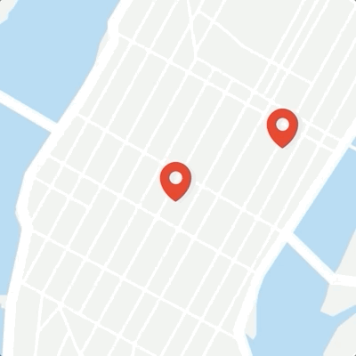
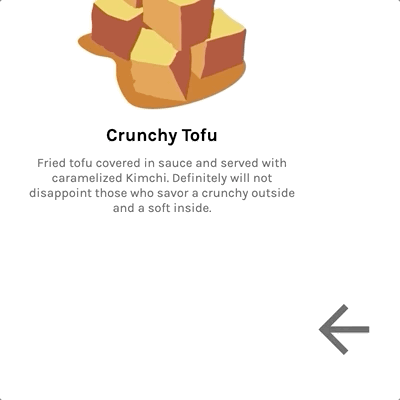
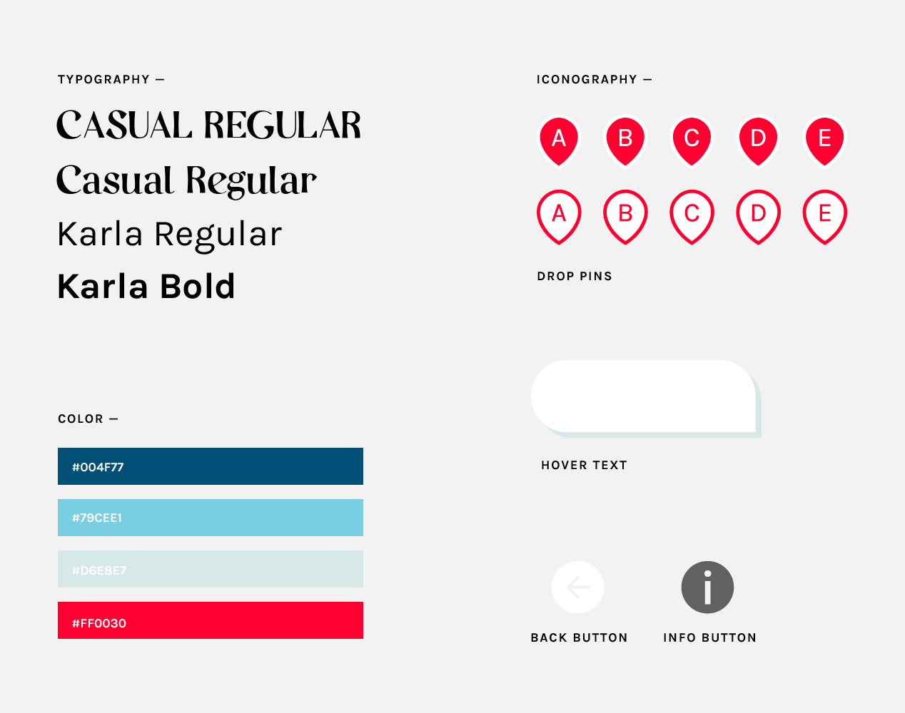

WEB DESIGN / GRAPHIC ILLUSTRATION
What To Eat In New York
An interactive site that gives a taste of some of the good eats in New York.
Role
Graphic IllustratorWeb Designer
Team
IndividualTools
Adobe IllustratorHTML, CSS, JavaScript
Timeline
3 days, Jan 2020
BACKGROUND
At the University of California, Berkeley, I was grateful to be enrolled into the Web Design DeCal, instructed by Innovative Design. Throughout the course, we learned various web development techniques, from HTML & CSS to JavaScript & jQuery, as well as design theories like spacing, positioning, and web color theory - all needed to create one's own personal website!

Picture from Web Design and Development deCal Facebook page.
OBJECTIVE
Create a fully functional website (on the front-end) applying the skills and theories learned from the course. The site must have views and 3 features.
IDEATION
In aims to demonstrate my web design skills and show others some of the good eats I found in New York, I decided to create an interactive site that gives a taste of some of the scrumptious foods in New York.
To get the some accuracy in location, I traced a screenshot of a Google Map's zoom on New York. I also incorporated by the Google Maps' colors (blue, red, and grey) and included pins and hover text to echo the interface.

Zoom in Kura restaurant via Google Maps.

Hover text to differentiate pins from one another and specify location name.
Hover text to differentiate pins from one another and specify location name.
Pulse animation to further specify exact location with nearby streets.

Animated back button to notify users.
Animated back button to notify users.
INTERACTION
VERSION 2.0
Feeling need for improvements with visuals and interaction, I decided to take another go at the site, implementing more animations and other features.
IDEATION
Including direct links to social media pages or Yelp —
Adding an icon hyperlinking to social media pages or Yelp reviews would very much help other users to be more inclined to eat at a certain restaurant based on a whole data of reviews.More animated features —
Adding more animation to my site would improve the interactive space that my website offered, rather than have items fixed to the page itself.Add more contrasted and bright colors —
The current site looked too muted and it was difficult to clearly identify certain features of the site, especially the background. Updating the colors to be vibrant and contrasted with one another would enhance the overall visual experience.In the original iteration, I added hover text to differentiate the locations. However, also inverting the color of the pin once the pin was hovered further visually differentiated the locations from one another.

Screenshot of Yelp map.
STYLE GUIDE

INTERACTION
NEXT STEPS
Responsive —
To keep my site inclusive to all users - those using different devices (phone, laptop, ipad, etc.), I think another improvement would be to keep my site responsive and compatible with different users.Include icons to insinuate the type of ethnic cuisine —
To give further context on the specific location, including icons would help insinuate the type of ethnic cuisine one is feeling hungry for at the moment.Have whole site within one page —
Having the whole site within one page instead of linekd to pages would help tie in all elements of the page in a concise and smooth manner.